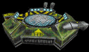

Stats Updated ??? ??, ????
OVERVIEW
Natural Selection is a multiplayer-only Half-Life mod. In it, players join one of two very different teams:
The Frontiersmen - elite marines using advanced technology and weaponry to take back human ships and bases. Victory requires intense teamwork, and excellent tactics.
The Kharaa - ferocious alien creatures with amazing evolutionary and biological abilities, who hunt and destroy any and all intruders to their new territory. Victory requires skillful adaptation, and deadly combat proficiency.
GETTING STARTED
[Charlie writes about tech requirements, downloading]
GOALS (VICTORY)
To win, the Frontiersman must destroy all of the Kharaa and their ability to respawn. Kharaa respawn from hives. Each map has three potential hive locations. The Frontiersmen must destroy any active hives, and then hunt down any remaining Kharaa. When the last hive is destroyed, the Kharaa begin to die - though as long as there is one Kharaa out there with enough resources to build a new hive, the battle isn't over. When the last alien dies, the game ends.
The Kharaa must destroy all Frontiersmen and their ability to respawn. Marines respawn from infantry portals. Infantry portals can be built near any command console, in any quantity desired (though they cost resources -- typical numbers range from two to six). With the infantry portals destroyed, the aliens must prevent new ones from being built. There are two ways to accomplish this: by killing every Frontiersman, or by destroying all command consoles. As long as there is one marine, and one command console, the Frontiersmen have a chance to turn things around. When the last marine dies, the game ends.
STARTING CONDITIONS
The Frontiersmen begin the game at the Marine Base. This is the same location on each map. They start play with one resource collector and one command console. Note: until an infantry portal is built, marines won't be able to respawn. Starting weaponry for a Frontiersman is an LMG (light machine gun), pistol, and knife.
The Kharaa begin the game at their first hive, which is randomly selected from one of three fixed locations on each map. They start play with one active hive and one resource collector. Each Kharaa begins as a Skulk (for more information on the five species of Kharaa, see the Alien Species section).
THE POP-UP MENU
The pop-up menu is a quick and intuitive way to access commands for both teams. Knowing your way around the pop-up menu will save you time … and might just save your skin.
For the marines, it's used primarily for communication - asking for orders, urgent equipment requests, or reporting combat conditions. The advantage to using the pop-up menu for these tasks (as opposed to typed or voice communication) is that your requests pop up on the Commander's display, at your location. The pop-up menu can also be used for actions, like selecting and dropping weapons.
The Kharaa also use their pop-up menu to communicate with teammates; but it's also how you spend resources to build, evolve new abilities, and change species (see the Kharaa sections below for more info).
RESOURCES
Frontiersmen need resources so their commander can give them goodies like sentry turrets, grenade launchers, jetpacks, and armor upgrades. Kharaa need resources so they can create new hives, evolve abilities like cloaking, and scent of fear, and change into new species of Kharaa like the thundering Onos, or the winged Lerk. Both teams use resources when they build anything, or improve their capabilities. This makes securing resources the key to victory in all but the quickest of games.
The marines and aliens distribute resources in slightly different ways, and use them very differently. There are two methods of acquiring resources:
| SOURCE | MARINE REWARD | ALIEN REWARD |
|---|---|---|
| Killing an enemy player | 1-3 random resources to team |
1-3 random resources to killer |
| Resource tower | 1 resource per to team |
1 resource per split evenly among team-members |
THE COMMANDER (AND FOLLOWING ORDERS)
At the heart of the marine deployment is the Commander. From inside his command chair he has a bird's eye view of the action - choosing what technology to research, deciding where to build, equipping and healing your team, and guiding the marines to victory. A team without a commander, or that doesn't work very closely with one, is almost always toast.
The Commander is in charge of spending the team resources. This means you'll be asking him for things fairly often (like health packs), but keep in mind: he can't give you something your team can't afford, or you haven't researched yet. And he's usually doing ten things at once - so while getting a shotgun might seem vital to you, it might not be as important as dropping health packs for the squad fighting for their lives in an enemy hive.
The Frontiersmen are at their best working together to carry out the Commander's orders. Following orders doesn't just lead to victory - it usually puts you where the action is, in the spots where the game is won or lost.
Any marine can become commander by stepping into the Command Console. There can only be one Commander at a time.
MARINE WEAPONS & EQUIPMENT
Your Commander can equip you with new weapons and gear by researching the appropriate tech (which costs resource points) and then dropping the new weapon for you (which also costs). Here's a list of the available weapons and gear:
| MARINE WEAPONS - SLOT 1 | |||||||
|---|---|---|---|---|---|---|---|
 |
LIGHT MACHINE GUN :: Default weapon. Fair damage and range. Versatile and effective, more so in groups. Marines spawn with
|
||||||
 |
SHOTGUN :: Deadly at close range. Fires
|
||||||
 |
HEAVY MACHINE GUN :: Not as accurate as the Machine Gun, but twice the punch and a bigger clip.
|
||||||
 |
GRENADE LAUNCHER :: Used for groups of enemies or structures. Grenades explode on contact with an enemy or after
|
||||||
| MARINE WEAPONS - SLOT 2 | |||||||
 |
PISTOL :: Default secondary weapon. Good accuracy and power, small clip. Marines spawn with
|
||||||
| MARINE WEAPONS - SLOT 3 | |||||||
 |
KNIFE :: Last ditch weapon when marines run out of ammo or want to conserve it.
|
||||||
| MARINE WEAPONS - SLOT 4 | |||||||
 |
WELDER :: Used to repair structures and armor, and to change map features.
|
||||||
 |
MINES :: Trip mine/land mine used for defense. Mines explode on contact with an enemy or after absorbing
|
||||||
| MARINE ARMOR AND EQUIPMENT | |
|---|---|
 | HEAVY ARMOR :: Raises the armor of a marine from |
 | JETPACK :: Allows marines to deploy quickly, harass, and to stay out of harm's way of ground-based lifeforms. Can't be worn with Heavy Armor. Cost: |
 | HEALTH PACK :: Adds up to Cost: |
 | AMMO PACK :: Adds one clip worth of ammunition to the marine's inventory. Automatically transforms itself into the appropriate ammunition type for the currently selected weapon. Only picked up if the marine can hold more and the weapon requires ammunition for use. Cost: |
MARINE TECHNOLOGY & UPGRADES
The Commander can also research upgrades that effect all marines:
| ARMS LAB UPGRADES | |||||
|---|---|---|---|---|---|
| DAMAGE UPGRADES :: Three levels of upgrade that provide Cost: Research time: |
|||||
| ARMOR UPGRADES :: Three levels of upgrade that give a Cost: Research time: |
|||||
| TECH LAB UPGRADES | |||||
| JETPACK TECH :: This technology allows marines to be equipped with jetpacks. Once researched, jetpacks can be constructed within Cost: Research time: |
|||||
| HEAVY TECH :: This technology is required before heavy armor can be purchased. Once complete, heavy armor can be constructed within Cost: Research time: |
|||||
| OBSERVATORY UPGRADES | |||||
| MOTION TRACKING :: When this powerful upgrade is purchased, the commander and all marines see "blips" on their HUD where a moving enemy is detected, even through walls. Aliens can counter this effect by staying close to sensory chambers.
Cost: Research time: |
|||||
| DISTRESS BEACON :: The distress beacon sends an SOS signal to the orbiting dropship. When the signal is completed, the dropship reinforces the marine team (all dead marines respawn immediately). This is a last ditch safety measure that can be used from a functioning observatory.
Cost: Time to activate: |
|||||
| PHASE TECH :: Phase tech is a specialized nanite technology needed for construction of phase gates.
Cost: Research time: |
|||||
| ARMORY UPGRADES | |||||
| ADVANCED ARMORY :: The armory must be upgraded to an advanced armory before heavy weapons can be purchased. When complete, heavy machine guns and grenade launchers can be dropped within Cost: Research time: |
|||||
| TURRET FACTORY UPGRADES | |||||
| SIEGE UPGRADE :: Turret factories can be upgraded for siege capabilities. Once this upgrade completes, Automated Siege Cannons can be built within Cost: Research time: |
|||||
ELECTRICAL DEFENSE :: Turret factories and resource nodes can be "electrified", providing automatic defense against smaller enemies. Up to
|
|||||
MARINE STRUCTURES
Researching new weapons and upgrades requires the building of structures. Structures also serve many other purposes, from defense to allowing travel across the map. Your Commander will place structures, but until you and your teammates build them, they will not be active. To build, get within touching distance and hold down your "use" key.
| BASIC MARINE STRUCTURES | |||||||
|---|---|---|---|---|---|---|---|
 | COMMAND CONSOLE :: Allows one marine to connect to the command network and take the role of Commander. The marine team always starts with a single command console.
Cost: Build time: Health: |
||||||
 | RESOURCE TOWER :: Allows the commander to tap a ship or base's raw nano-supplies, by constructing collection machines over resource nozzles. Adds Cost: Build time: Health: |
||||||
 | INFANTRY PORTAL :: Allows marines to respawn after killed. Infantry portals are the most crucial structure to defend, second only to the command console. Must be placed within Cost: Build time: Health: |
||||||
 | ARMORY :: Dispenses "free" ammo for a marine's active weapon, and allows weapon construction within Cost: Build time: Health: |
||||||
 | OBSERVATORY :: Reveals nearby enemies (even when cloaked), allows scanner sweeps, distress beacons, and research of motion tracking. Cost: Build time: Health: |
||||||
|  | PHASE GATE :: Allows marines to teleport between to distant areas on the map.
Cost: Build time: Health: |
||||||
| RESEARCH STRUCTURES | |||||||
 | ARMS LAB :: Taps local resources to allow three levels of weapons and armor upgrades.
Cost: Build time: Health: |
||||||
 | PROTOTYPE LAB :: Needed for jetpacks and heavy armor.
Cost: Build time: Health: |
||||||
| DEFENSIVE STRUCTURES | |||||||
 | TURRET FACTORY :: Allows sentry turrets (automated gun emplacements) to be built for base and perimeter defense. Turrets must be placed within Cost: Build time: Health: |
||||||
 | SENTRY TURRET :: Automatically acquires targets and fires at enemy players and structures. Needs a functioning turret factory nearby to continue working.
|
||||||
 | AUTOMATED SIEGE CANNON :: Stationary siege weapon that does tremendous damage to enemy structures (including hives). Can fire through walls but requires a marine spotter or scanner sweep to locate targets outside its field of view.
|
||||||
KHARAA BIOLOGY
The Kharaa do not have a Commander - they have the Hive, and Gorges. Gorges are a species of Kharaa that can build chambers, and start new hives. Hives respawn dead aliens, and heal any aliens standing nearby. With every new active hive, all Kharaa species become more powerful, and gain access to new evolutionary abilities. Choosing your species and evolutions allows you to adapt and try different strategies over the course of a game.
KHARAA SPECIES
There are five species of Kharaa. All players spawn as Skulks. In order to evolve to different species, you'll need to spend resource points. If you have enough resources, you can change species as often as you like.
When you change species you'll cocoon into an egg, and a meter will show the remaining gestation time till you emerge as a different species. While gestating, you are helpless.
Each species lends itself to different roles in combat - all of them important. If you die and respawn, you lose your evolutions and revert to a Skulk - which makes the more powerful species more costly to lose.
| KHARAA SPECIES | |||||||
|---|---|---|---|---|---|---|---|
 | SKULK :: All-purpose combat and scouting class that can walk up walls and ceilings.
|
||||||
 | GORGE :: Builder and "medic" class. Determines team strategy by choosing which structures to build and when.
|
||||||
 | LERK :: Flying support class. Not much of a fighter himself, but can heavily boost effectiveness of teammates. Good for hive defense, and abilities serve as "spells" he can use to attack or defend players or areas.
|
||||||
 | FADE :: Finesse attacking class. | ||||||
 | ONOS :: Lets player lead the charge and do tremendous damage to groups of players. | ||||||